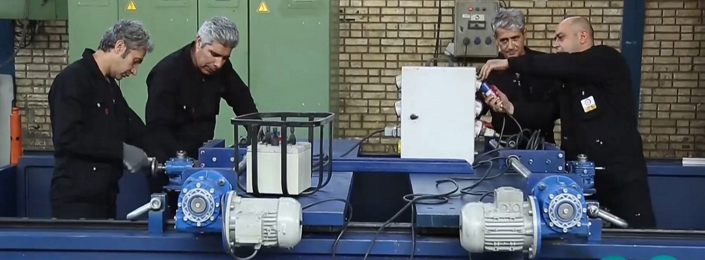

History of on-site machining
Onsite machining was common in shipbuilding and bridge-building industry in the early days, which was common for transferring holes for riveting parts together. The first case of in-situ machining took a more specialized form and a document was found for it, which was about He was in the shipbuilding industry 110 years ago

In the early years, on-site machining was not a specialized field as it is today, and it was mostly done by company specialists with limited facilities and information. Gradually, with the passage of time, the advancement of technology and the need of factories for this important on-site machining specialized companies were formed.

Machining in place, early in the shipbuilding and bridge industries The most specialized use of machining in place was in the shipbuilding industry in the United States of America. Built in 1907, this machine was capable of machining diameters between 22 and 30 feet.

Currently, more than 100 countries are continuously using on-site machining services, and about 30 active companies have been identified in this field.
Maksat Machine Tool Company started its activity in the field of on-site machining since 2002 and during this period it has placed itself in the top 15 global companies in this field in terms of specialized machines, training of technical personnel, scope of activity, etc.